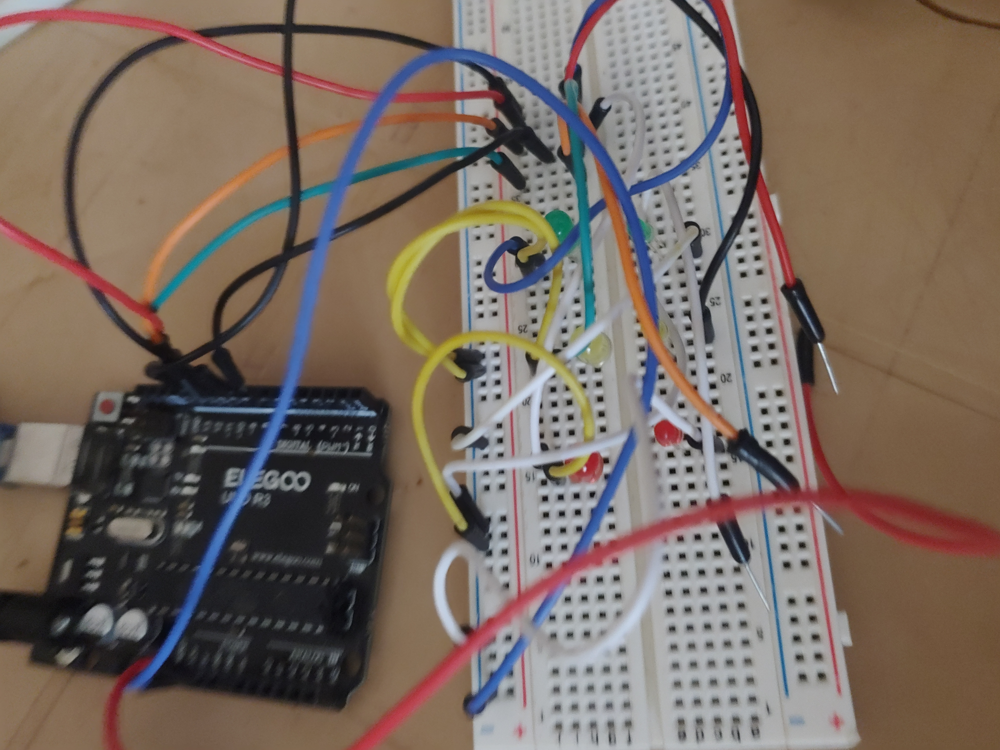

Mes projets
🐍 Application Python
Application simple pour automatiser certaines tâches.
🔧 Projet électronique
Montage avec microcontrôleur et capteurs.



🧱 Modélisation 3D
Création de modèles et prototypes 3D.
🎮 Mini-jeu Scratch
Développement d’un jeu interactif éducatif.